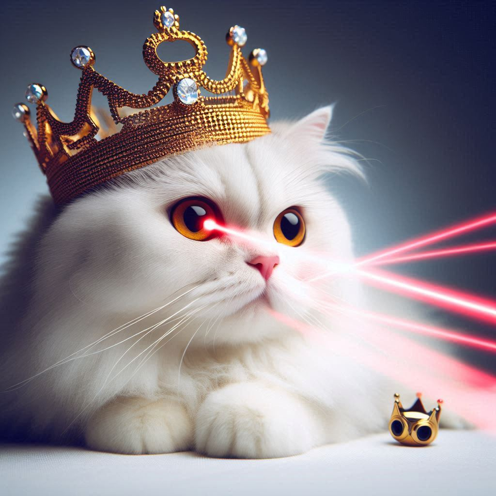

Well its more of a book series but really good! The Dungeon Crawler Carl series follows the adventures of Carl, an ordinary guy who, along with his ex-girlfriend's cat Donut, gets thrust into a deadly dungeon after Earth is destroyed. The premise is as wild as it sounds: Carl must navigate through a series of increasingly dangerous and bizarre levels filled with monsters, traps, and challenges, all while dealing with quirky NPCs and game mechanics. The story is a blend of action, dark humor, and creative problem-solving. Carl, initially an everyman, grows into a resourceful and resilient survivor. His journey is marked by the constant need to outthink the dungeon’s malevolent overseers and make alliances with other survivors. The series is a thrilling and often hilarious take on the dungeon crawler genre, emphasizing the unpredictability and sheer strangeness of the scenarios Carl and Donut find themselves in.
 Homepage Contact Us